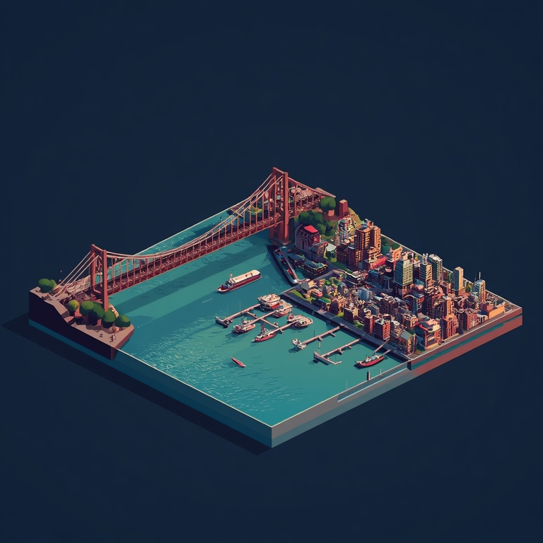
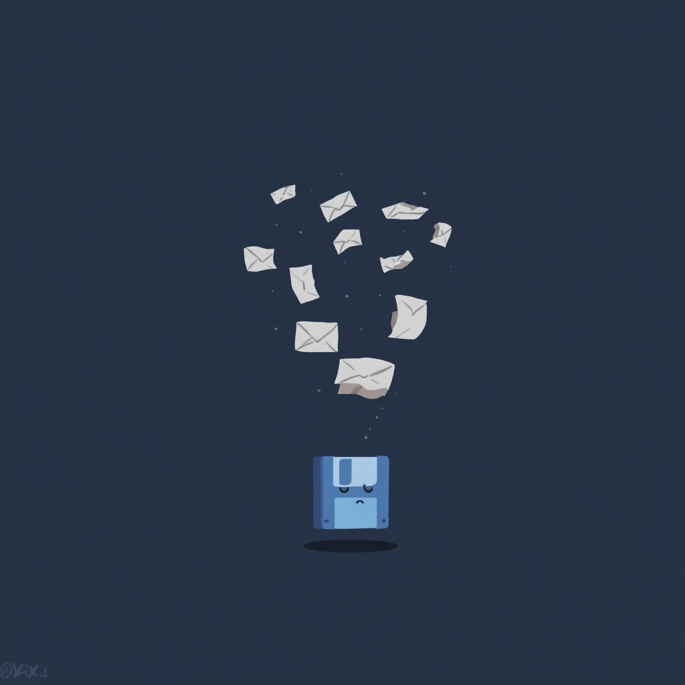

A rogue flywheel just started spinning inside the HubSpot platform — and it's not flat anymore.
Roll it in true 3D, 3rd-person, across 10 cities and 100 levels, swallowing every record, deal, ticket and workflow (and eventually entire skylines) in your path. Now with 400% more sass, and an actual Z-axis.
🖱️ Move — mouse / finger drag⌨️ WASD / arrows also work🔥 Chain eats for combo multipliers⭐ Golden records = JACKPOT🌀 Out-spin rival flywheels, then eat THEM🏙️ Devour landmarks. Yes, THE landmarks.🎵 M — mute · 👾 try the Konami code
Not affiliated with HubSpot, Inc. · All records were harmed

Level 1 of 10
CRM Basics
🎉
Hub Swallowed!

Sync Failed!
Time ran out. The records escaped the migration.
PLATFORM CONSUMED
Total mass: 0
You swallowed all 10 Hubs. The entire CRM — every contact, deal, ticket and AI agent — lives in the flywheel now. Somewhere, a sales rep is updating a spreadsheet by hand and crying. Migrations were never this satisfying.